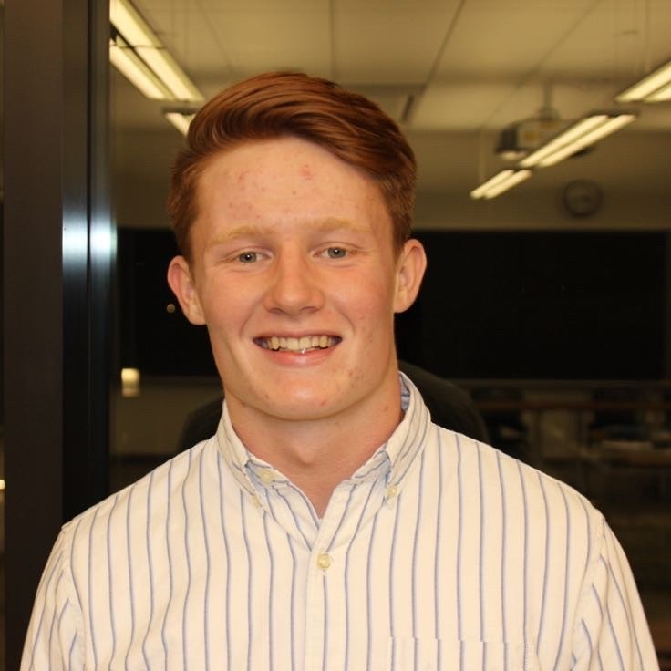

About
My name is Toby Frick and I am a Computer Science student at Grinnell College. I am passionate about user-oriented design and effective technological communication and am pursuing a carrer in software development in the US. Outside of software, I dive for Grinnell's swim and dive team on the 1 and 3 meter springboard. In my free time, I enjoy cooking and playing board games. My current favorite board game is Root.
